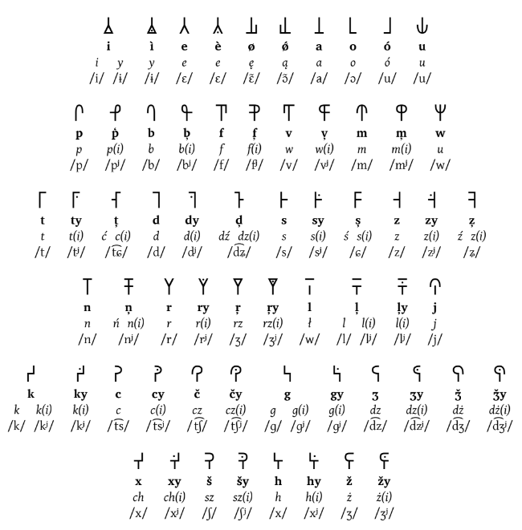
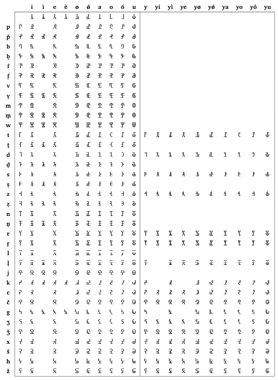

Wjitam na stronje dokumentującą Sylabjice!
Witam na stronie dokumentującą Sylabicę!
Co to Sylabica?
Sylabica to skrypt stworzony przez Marcina Qrczak
Kowalczyka w 1990 roku, lecz od tamtego momentu przeszła wiele rewizji. Skrypt został inspirowany przez Japońskie skrypty "Hiragana" i "Katakana", lecz wygląda bardziej podobnie do Koreańskiego alfabetu "Hangul".
Podobnie jak w standardowej polskiej ortografii, pisownia Sylabicy nie jest ściśle fonetyczna, ale zachowuje pewną podstawową strukturę, która została zaciemniona przez późniejsze zmiany fonetyczne języka. Ta zasada idzie czasami dalej niż w standardowej ortografii.
Etymologiczna pisownia języka polskiego (ortografia etymologiczna) to schemat transliteracji Sylabicy, który wykorzystuje zmodyfikowany alfabet łaciński. Można go łatwo i jednoznacznie konwertować na sylabiczne i z sylabicznych, podczas gdy konwersja między nimi a standardową ortografią nie może być w pełni zautomatyzowana. Abstrakcyjna pisownia może być używana jako alternatywna polska ortografia.
Ważne Cechy:
- W sylabach nie ma rozróżnienia przypadków
- Każdy znak oznacza samogłoskę, spółgłoskę, bądź sylabę
Głoski i Spółgłoski
O to są wszystkie samotne głoski i spółgłoski w Sylabicy. Odpowiadają one każdej literze w Polskim alfabcie łacińskim.
Sylaby
Tu znajdują się prawie wszystkie możliwe kombinacje sylab w Polskim Języku; każdy jeden jest reprezentowany przez osobny symbol w Sylabicy.
Przykład użycia Sylabicy
Łaciński:
Pchnąć w tę łódź jeża lub ośm skrzyń fig
Sylabica:
Pchnąć w tę łódź jeża lub ośm skrzyń fig
Łaciński:
Zażółć gęślą jaźń
Sylabica:
Zażółć gęślą jaźń
Translator
Tutaj możesz wpisać tekst po łacińsku, aby "przetłumaczyć" na Sylabicę